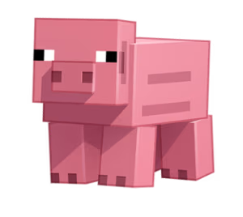
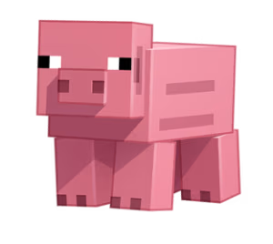
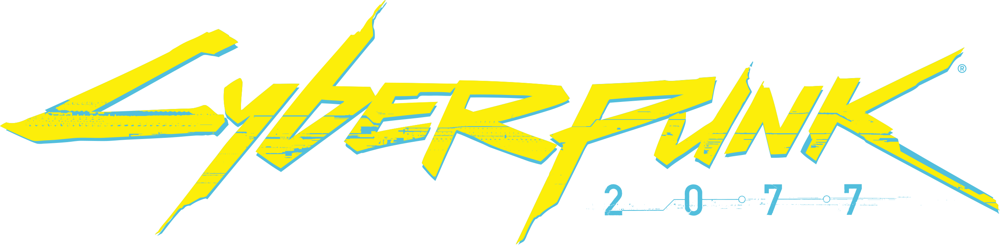
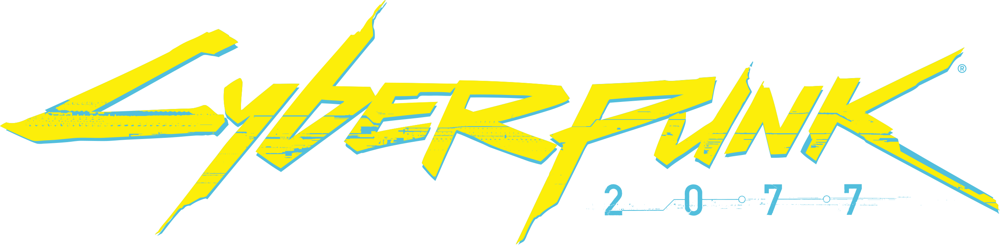
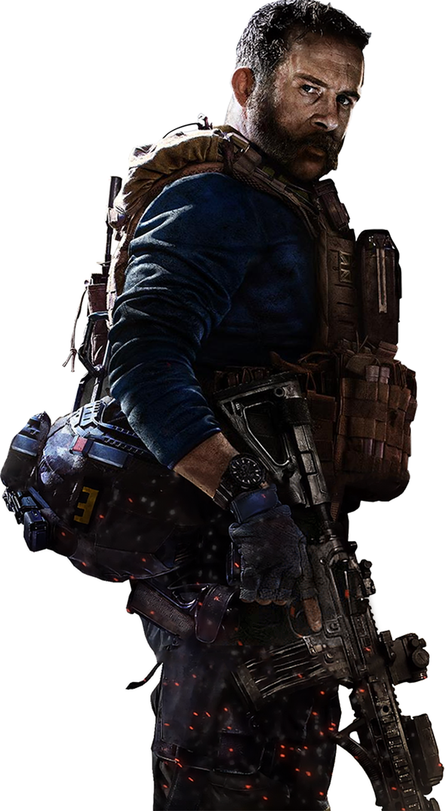
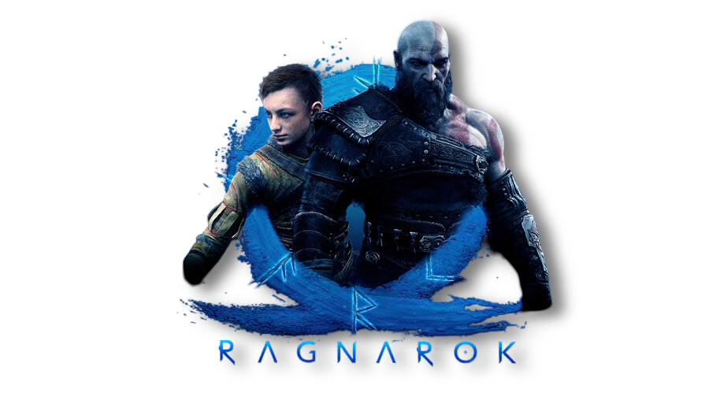
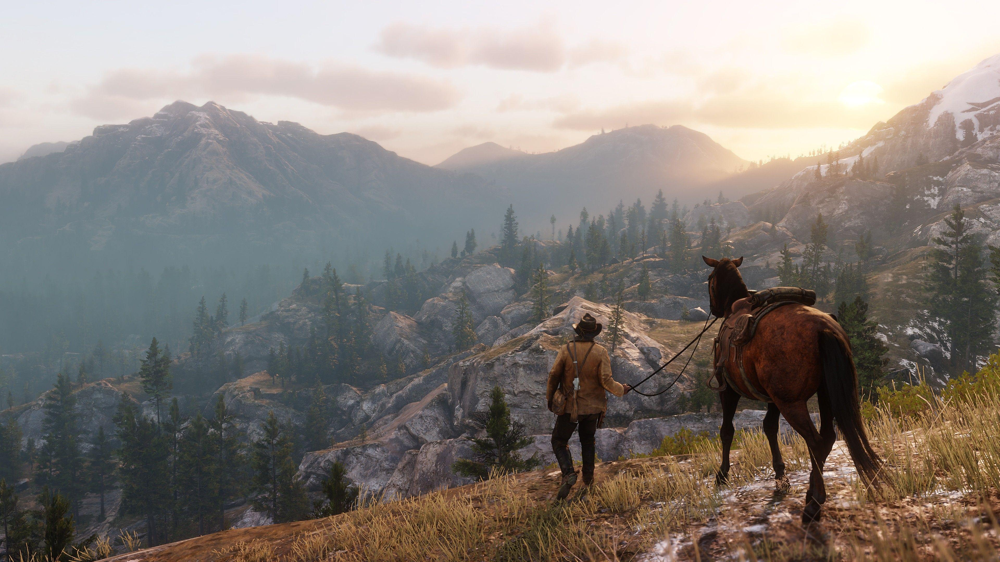

Ray Tracing
Ray tracing é uma técnica que simula como a luz real se comporta para criar imagens digitais.
Ela
"dispara" raios virtuais de luz pela cena e calcula como eles interagem com os objetos - se
refletem, passam através ou são absorvidos.
Isso resulta em reflexos, sombras e iluminação muito mais realistas que os métodos tradicionais
de renderização. É usado em filmes de animação e jogos modernos, mas exige muito poder
computacional para funcionar em tempo real.
Como Funciona
onde é usado
Video Games
 

 




